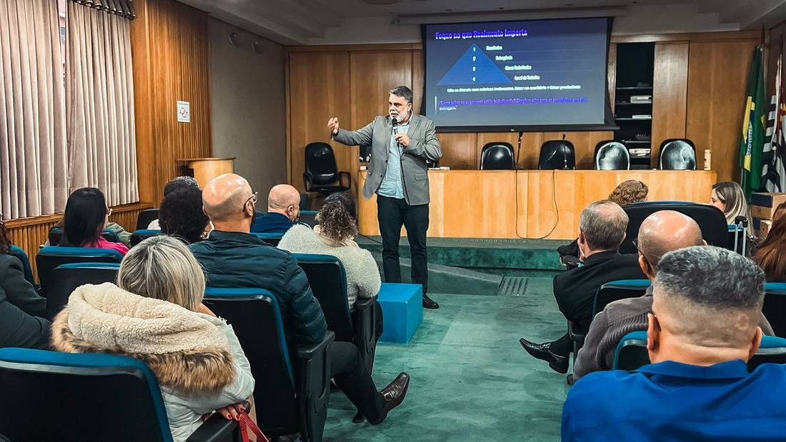
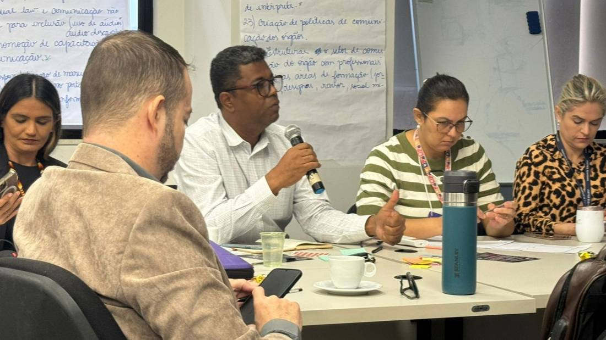
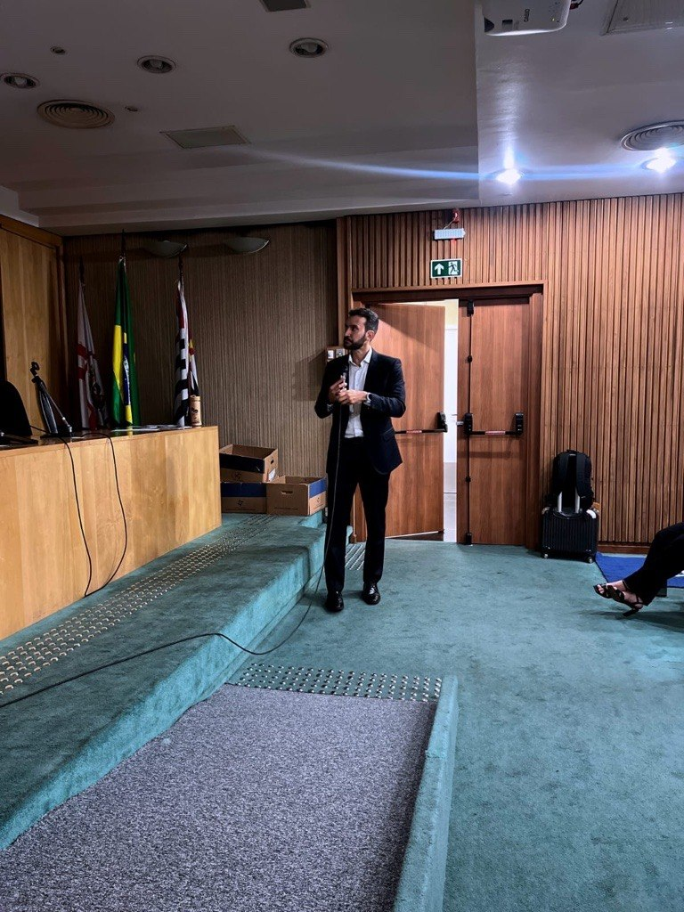

Pessoas
Nossos programas desenvolvem competências comportamentais, promovem colaboração em equipes e preparam líderes para inspirar e engajar com propósito.
O novo DNA do serviço público
A Inova Pública cria experiências de aprendizagem para órgãos públicos que precisam desenvolver servidores, fortalecer lideranças e transformar tecnologia em valor para o cidadão.
O problema invisível
Órgãos públicos investem em métodos, sistemas e capacitações, mas a mudança não se sustenta quando pessoas, sentido e prática institucional continuam desconectados.
A transformação começa quando o servidor deixa de ser tratado como recurso e passa a ser reconhecido como protagonista do valor público.
A nossa tese
A Inova Pública trabalha onde a mudança realmente acontece: na cultura, nas relações, nos rituais de trabalho e na capacidade dos servidores de transformar problemas em entregas melhores para a sociedade.
Nossos programas desenvolvem competências comportamentais, promovem colaboração em equipes e preparam líderes para inspirar e engajar com propósito.
Apoiamos lideranças e equipes na inovação no setor público, fortalecendo laboratórios e desenvolvendo competências para gerar valor público com criatividade e colaboração.
Apoiamos pessoas e equipes a aproveitar o potencial da transformação digital, repensando formas de trabalho e usando inteligência artificial e automação como aliadas estratégicas.
A cultura organizacional é o eixo invisível que sustenta ou bloqueia qualquer mudança. Por isso, nosso trabalho não começa pela ferramenta. Começa pela consciência, pela prática e pelo servidor que decide servir melhor.
Como a mudança acontece
Cada projeto combina aprendizagem, facilitação e aplicação prática. O objetivo é criar repertório, comportamento e capacidade instalada.
Entendemos o contexto, a cultura, as dores e o momento institucional.
Desenvolvemos competências humanas, gerenciais e digitais com linguagem pública.
Aplicamos métodos em desafios reais, conectando aprendizagem e entrega.
Formamos multiplicadores capazes de sustentar a mudança de dentro para fora.
Trilhas e programas
As entregas são combinadas conforme o desafio do órgão: palestras, cursos, oficinas, trilhas, mentorias e programas sob medida.

Desenvolve gestores e sucessores para liderar pessoas, tomar decisões e mobilizar equipes em contextos complexos.

Forma equipes para redesenhar serviços, resolver problemas complexos e fortalecer laboratórios de inovação.

Prepara lideranças e equipes para usar tecnologia com consciência, produtividade e foco no cidadão.
Prova de realidade
A Inova Pública nasce de servidores que conhecem as estruturas, limites e possibilidades do setor público. Essa experiência torna a aprendizagem mais crível, aplicável e próxima da rotina institucional.


“Importante ter sido ministrado por servidores públicos. Em outros cursos, para empresas privadas, o conteúdo acaba não se aplicando ao nosso dia a dia. Aqui, foi diferente.”
Depoimento de participante
Potencializadores
O nosso papel é oportunizar experiências de aprendizagem que potencializem líderes e equipes rumo ao novo DNA do serviço público.

Comunicação. Feedback. Pessoas. Liderança Feminina.

Gestão Pública. Inovação. Negociação. Equipes híbridas.

Neurociência. Mindfulness. Liderança humanizada.
Rede Inova Pública
Para fazer parte da Rede Inova Pública, preencha o formulário. Nós avaliaremos sua proposta e momento e você receberá o nosso contato.
Próximo passo
Conte o desafio. A Inova Pública desenha uma proposta sob medida para o momento da sua instituição.
Atendimento para cursos, palestras, trilhas, mentorias e programas institucionais.